A.0 — Overview, Prompts, and Seed
In Part A, I use the DeepFloyd IF Stage I diffusion model to explore forward diffusion,
denoising, iterative sampling, classifier-free guidance (CFG), SDEdit-style
image-to-image translation, inpainting, visual anagrams, and hybrid images. I generated
prompt embeddings via HuggingFace and used a fixed random seed
seed = 100 for all sampling-related experiments.
Example prompts I worked with:
- "a cartoon avocado lifting weights, bold outlines, flat colors"
- "a charcoal sketch of a small house under a starry sky"
- "a digital painting of a rocket ship launching over the UC Berkeley Campanile"
- "at sunset, cinematic lighting"
- "a high quality photo"
- "a bear dancing"
- "a man wearing a hat"
- "a lithograph of a waterfall"
- "a lithograph of a skull"
- "an oil painting of an old man"
- "an oil painting of people around a campfire"
num_inference_steps = 20.num_inference_steps = 80.A.1 — Forward Diffusion and Classical Denoising
A.1.1 — Forward Process on the Campanile
I implemented the forward diffusion process
x_t = sqrt(alpha_bar_t)·x_0 + sqrt(1 - alpha_bar_t)·ε
using the provided alphas_cumprod. Below, I apply this to a 64×64
Campanile image at timesteps 250, 500, and 750.
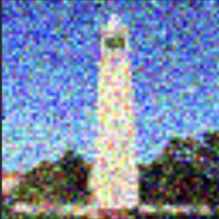
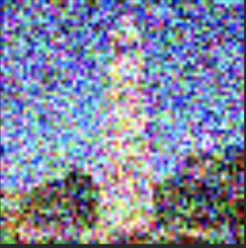
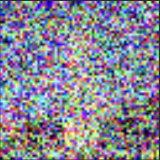
A.1.2 — Gaussian Blur Baseline
Using torchvision.transforms.functional.gaussian_blur, I applied
Gaussian smoothing (e.g., kernel 5, σ = 2) to the noisy Campanile images
as a classical denoising baseline. It removes high-frequency noise but
also blurs edges and structure quite heavily.
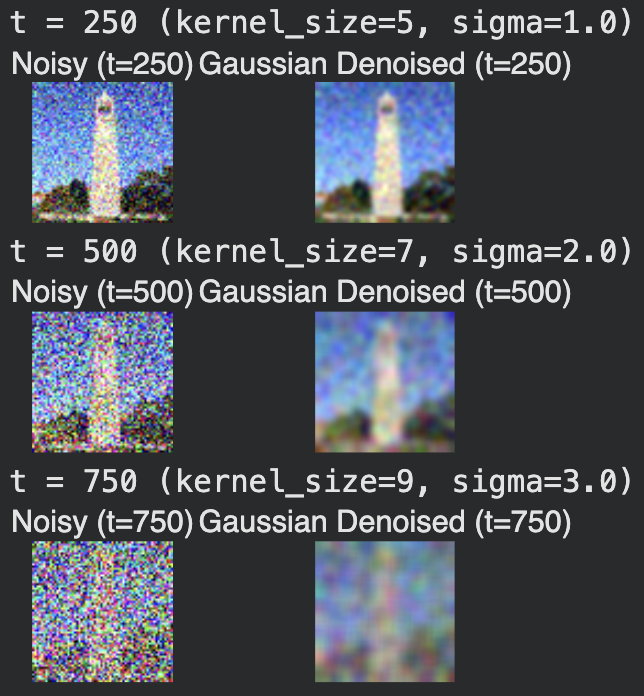
One-Step & Iterative Denoising
One-Step Denoising
I used stage_1.unet to predict the noise ε̂ from
a noisy image at timestep t, then reconstructed an estimate of
the clean image:
x0_hat = (x_t - sqrt(1 - alpha_bar_t) * eps_hat) / sqrt(alpha_bar_t).
Iterative Denoising (Strided Timesteps)
I constructed a strided timestep schedule
[990, 960, ..., 0] (stride 30) and implemented DDPM-style
iterative denoising using the supplied add_variance function.
Starting from a noisy image at i_start = 10, I iteratively
denoise to t = 0.
Diffusion Model Sampling
Sampling from Pure Noise (No CFG)
I sampled pure Gaussian noise at the highest timestep, then ran the
iterative denoising loop with i_start = 0 and the
prompt embedding for "a high quality photo". The results
are somewhat image-like but noisy and incoherent.
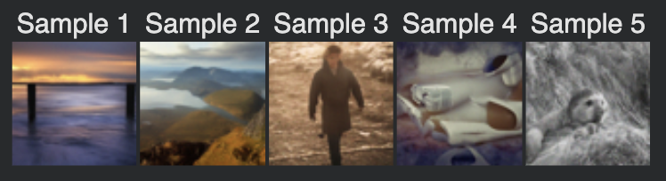
Classifier-Free Guidance (CFG)
I implemented iterative_denoise_cfg, which runs the UNet
twice (conditional and unconditional) and combines noise predictions via
eps = eps_uncond + γ·(eps_cond - eps_uncond). I used
guidance scale γ = 7.
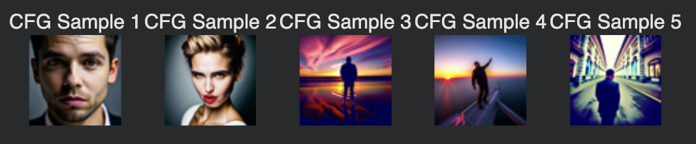
Image-to-Image Translation, Inpainting, Anagrams, and Hybrids
SDEdit on the Campanile
I applied SDEdit: starting from the real Campanile, add noise corresponding
to a given i_start, then run the CFG sampler back to t = 0
with prompt "a high quality photo". Lower noise makes subtle edits; higher
noise yields larger changes.
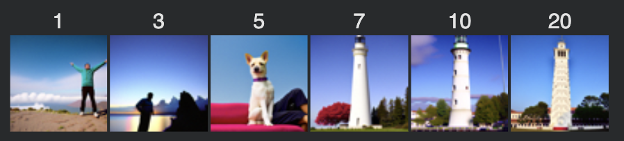
i_start ∈ {1, 3, 5, 7, 10, 20}, plus original (right). Edits grow more drastic as starting noise increases.SDEdit on Other Test & Hand-Drawn / Web Images
I repeated SDEdit on two more real images and on both web and hand-drawn inputs. Starting from sketches, the model “projects” them onto the natural image manifold while preserving rough layout.
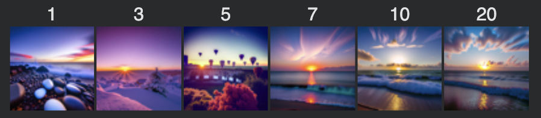
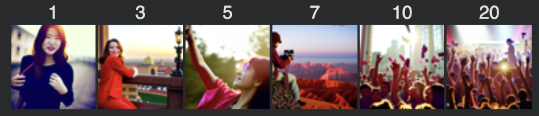
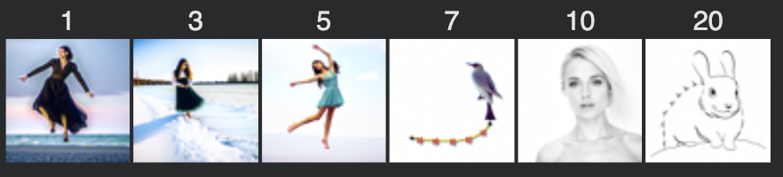
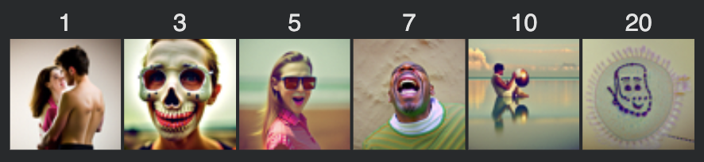
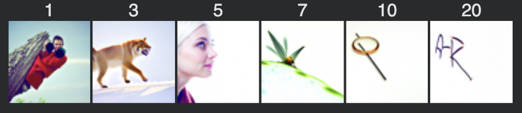
A.4.3 — Inpainting
I implemented an inpainting loop where, at every denoising step, I overwrite
unmasked pixels with the appropriately noised original image
x_0 at the current timestep, and only allow the masked region
to be denoised freely.
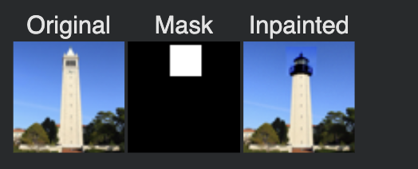
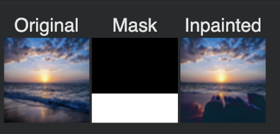
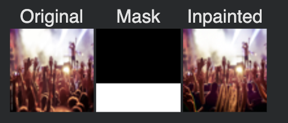
Text-Conditional Image-to-Image Translation
I then used SDEdit but changed the prompt to non-trivial text (e.g., “a rocket ship over campus”), making the projection respect both the original image structure and the new text semantics.
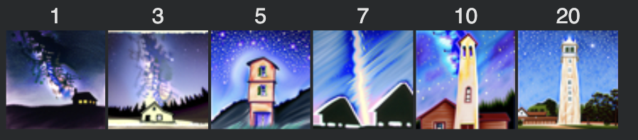
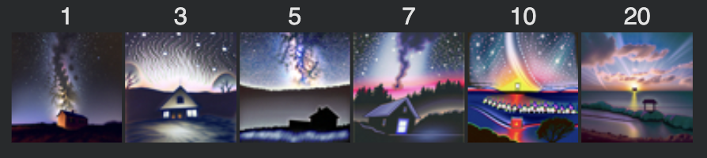
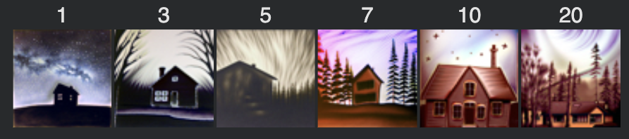
Visual Anagrams
For visual anagrams, I denoise normally with prompt p1 on the
current image and with prompt p2 on the vertically flipped image,
flip the second noise estimate back, average them, and perform the reverse step.
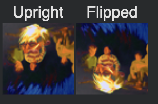
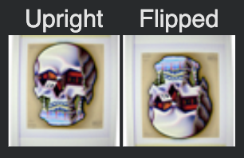
Hybrid Images
I implemented make_hybrids, which computes two CFG noise estimates
using prompts p1 and p2, extracts low frequencies from
one and high frequencies from the other using a Gaussian blur
(kernel 33, σ = 2), and recombines them:
eps = lowpass(eps1) + highpass(eps2).
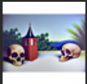
B.1 — Single-Step Denoising UNet on MNIST
In Part B, I train my own UNets from scratch on MNIST. I start with a single-step denoiser, then implement time-conditioned and class-conditioned flow matching models. For all parts I use the MNIST training set with standard train/test splits.
B.1.1 — Noise Process Visualization
I implemented add_noise(x, sigma) and visualized MNIST digits
at σ ∈ {0.0, 0.2, 0.5}. Images are normalized to [-1, 1] internally
and mapped back to [0, 1] for visualization.
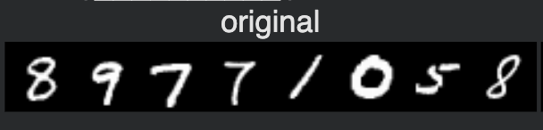
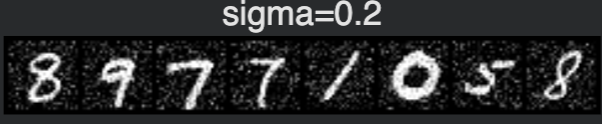
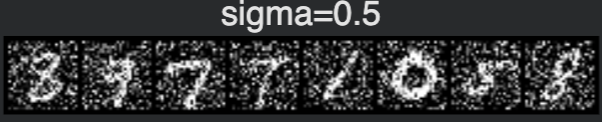
B.1.2 — Training the Single-Step Denoiser
I used an unconditional UNet with hidden dimension D = 128. The training objective
is an L2 loss between the network output and the clean digit
x, given a noisy input x̃ constructed on the fly with
random σ (here, σ = 0.5).
- Batch size: 256
- Optimizer: Adam, learning rate 1e-4
- Epochs: 5
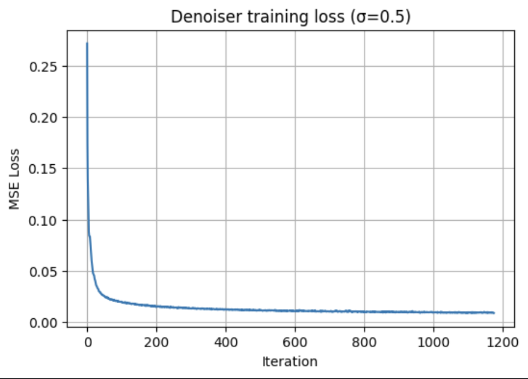
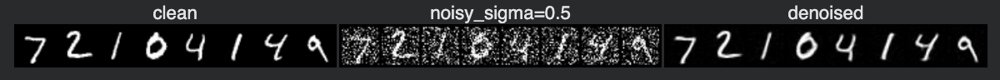
B.1.3 — Out-of-Distribution Noise Levels
I evaluated the trained denoiser on test digits with different σ values (not seen during training). It performs best around σ = 0.5, with performance degrading for much smaller or larger noise.
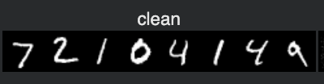
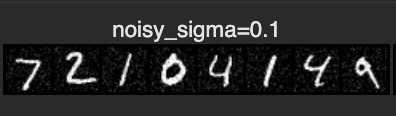
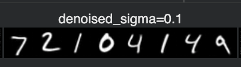
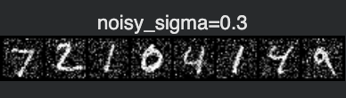
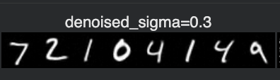
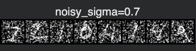
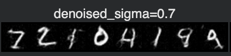
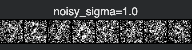
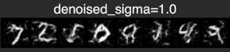
B.1.4 — Denoising Pure Noise
I retrained the UNet to map pure Gaussian noise directly to clean digits, again using an L2 loss. The model learns to output blurry, “average” digits, reflecting the centroid-seeking behavior of MSE.
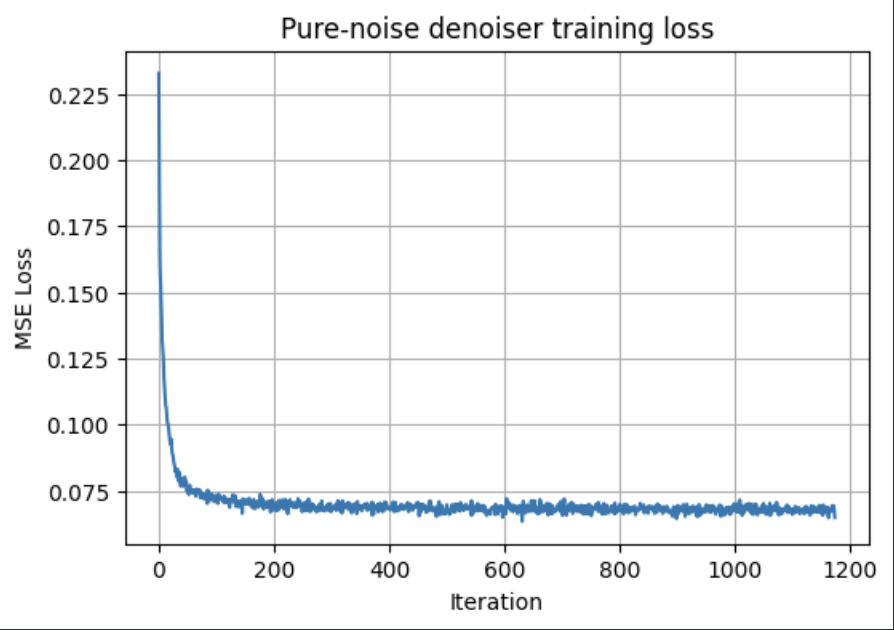
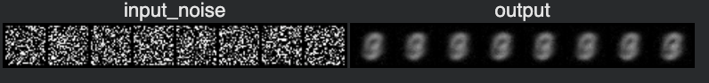
Intuitively, minimizing MSE pushes predictions toward the point that minimizes squared distance to all training images (a centroid), which explains the blurred, averaged shapes when starting from unstructured noise.
B.2 — Time-Conditioned Flow Matching
B.2.1 — Time-Conditioned UNet Architecture
I implemented a time-conditioned UNet where a scalar time
t ∈ [0,1] is embedded via FCBlocks and injected into the
network at the bottleneck and in the first upsampling stage:
t1 = fc1_t(t)modulates the unflatten (7×7) feature maps.t2 = fc2_t(t)modulates the first upsampling block.
During training, I sample x_1 (clean MNIST digit), x_0
(pure noise), a random t, and form a convex combination between
them. The network is trained to approximate the flow field
between noise and data using the provided time flow-matching objective.
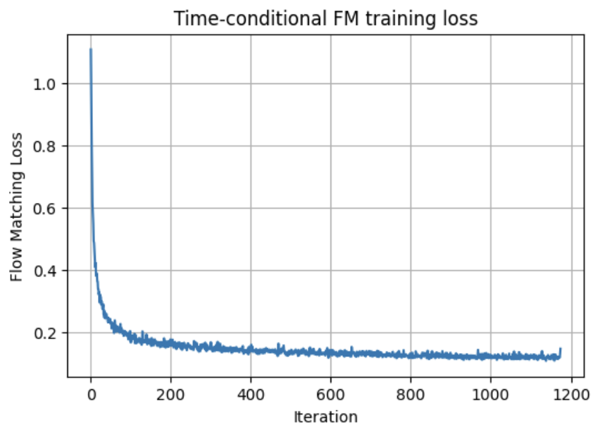
B.2.2 — Sampling from the Time-Conditioned UNet
I implemented time_fm_sample, which samples from the learned
flow by integrating the ODE from t = 0 (noise) to t = 1 (data) using Euler
steps and the trained UNet. Below are samples after different numbers of
training epochs.
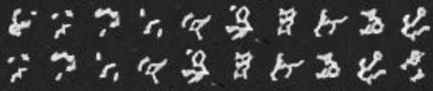
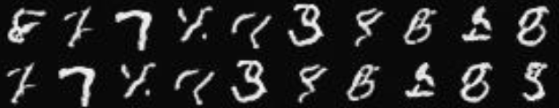
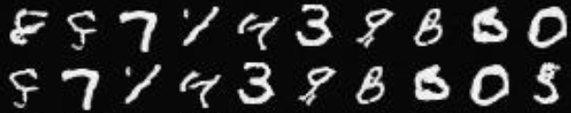
B.3 — Class-Conditioned Flow Matching
B.3.1 — Class-Conditioned UNet
I extended the UNet to accept both a time t and a class
one-hot vector c. I added two more FCBlocks for class
conditioning and combined them with the time embeddings:
unflatten = c1 * unflatten + t1up1 = c2 * up1 + t2
For classifier-free guidance during training, I drop the class conditioning
with probability p_uncond = 0.1 by replacing c
with zero.
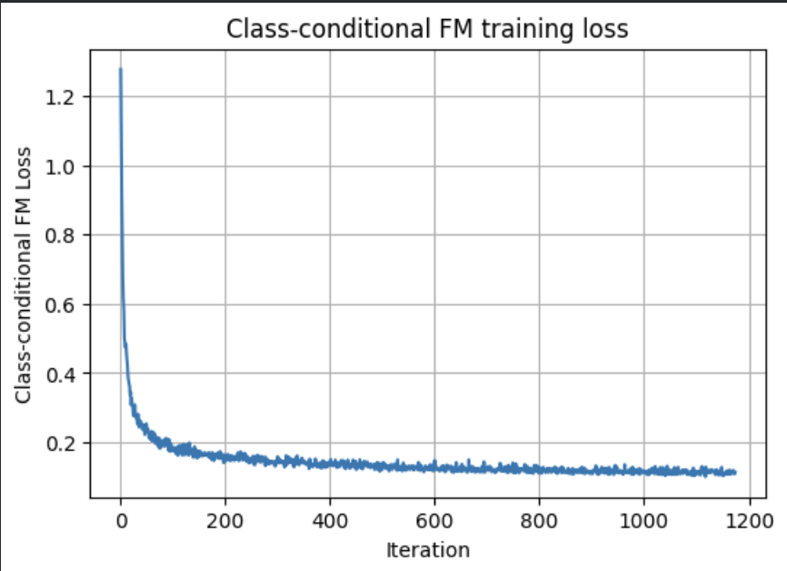
B.3.2 — Class-Conditional Sampling (with CFG)
Using class_fm_sample, I sampled digits conditioned on each
class label 0–9 while applying classifier-free guidance with scale
guidance_scale = 5.0. I generated multiple instances per digit.
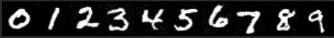
B.3.3 — Removing the Learning Rate Scheduler
The assignment asked whether we can remove the exponential LR scheduler and still maintain performance. Originally, I used:
- LR:
1e-2withExponentialLR(gamma < 1)
Without the scheduler, I lowered the learning rate and slightly extended the training schedule to keep optimization stable:
- LR:
3e-3, no scheduler, modestly more epochs
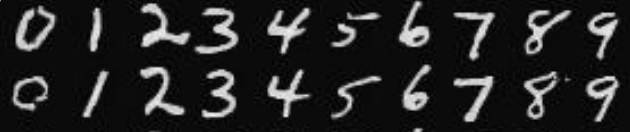
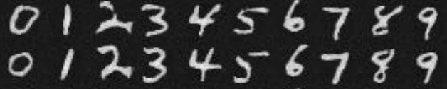
In practice, a slightly smaller fixed learning rate and a bit more training time approximate the effect of an exponential scheduler well enough, while keeping the implementation simpler.